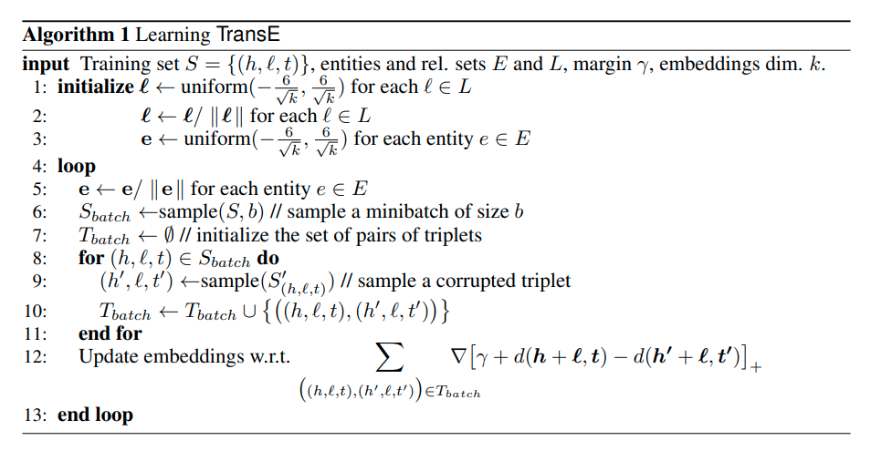
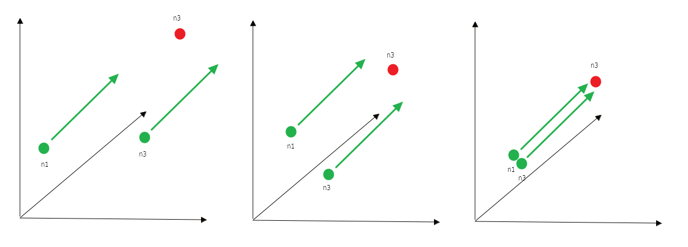
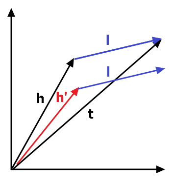
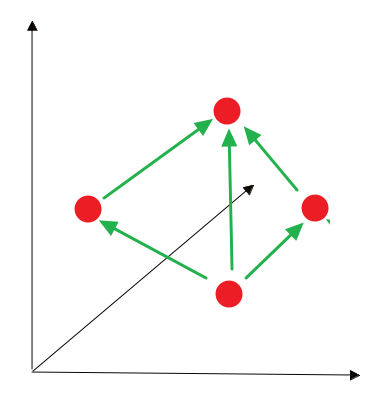
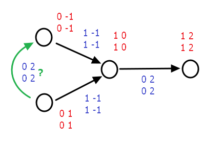

Translating алгоритмы (а точнее TransE), рассматриваются в курсе cs224w, про них есть домашка и они фигурируют в нескольких последних лекциях, есть смысл разобраться в том, как именно они устроены. Алгоритм TransE (Translating Embeddings for Modeling Multi-relational Data) осуществляет поиск эмбеддингов для нод графа с учетом их возможных связей.
В начале сам алгоритм:

TransE использует так называемый “shallow” encoding. Каждая нода кодируется произведением , где , а (0 всюду кроме колонки , индицирующей ). Таким образом мы получаем вектора одинаковой размерности для всех нод, по одному для каждой ноды.
В задачах, решаемых TransE, мы имеем некий граф знаний , в котором - это множество нод (entities), - множество ребер, а - множество возможных связей.
содержит триплеты , определяемые следующим образом:
- исходящая нода (head)
- связь (relation)
- нода, завершающая связь (tail)
Можно представить себе граф, в котором существуют точки, для которых сложно определить близость. Например в графе территорий и населенных пунктов город Москва (head) является столицей России (tail). Между данными нодами графа есть некая связь (relation). Задача алгоритма TransE обучиться такому векторному представлению для , что-бы оно отображало эту связь для всех аналогично связанных нод. Итак, необходимо представить эмббеддинги head, tail и relation в пространстве (где - это кол-во измерений), после чего обучить алгоритм таким образом, чтобы сумма head и relation была как можно ближе к tail.
Если мы исходим из того, что и предполагаем что . Такие триплеты мы можем считать “правильными”. Тогда можно предположить существование и “неправильных” (corrupted) триплетов , выбранных из некого в котором или (но не оба одновременно) заменены на случайные, входящие в .
К примеру Берлин в нашем графе мог бы оказаться столицей России, но к счастью, такой связи мы не наблюдаем.
Итак, функция потерь, которую будет минимизирвоать TransE, выглядит так:
Нам необходимо сделать так, чтобы разница правильных и неправильных эмбеддингов (с учетом зазора ) и (с регуляризацией по норме или ) стремилась к нулю сверху. Для этого мы будем использовать стохастический градиентный спуск с минибатчами через все , и . Триплеты будем выбирать семплированием, а инициализируем всю конструкцию случайными значениями.
Что будет делать алгоритм?
-
вначале мы случайным образом инициализируем все вектора для каждого и все вектора для всех entities в графе
-
нормализуем эмбеддинги, что-бы исключить тривиальную оптимизацию по кратчайшим расстояниям
-
затем, уже в цикле, будем определять размер минибатчей и иницилизировать сеты триплетов - для каждого правильного триплета в минибатче будем получать неправильный
-
наконец будем считать лос и обновлять эмбеддинги по нарпавлению градиента
Выглядит это примерно так: мы постепенно подтягиваем эмбеддинги нод в векторном пространстве так, чтобы они отражали связь.

Еще раз на примере векторов:

Мы получаем сумму разниц правильных и неправильных эмбеддингов следуя через все пространство вещественных значений и до тех пор пока не выкинем все несвязанные пары нод. Все что осталось, очевидно имеет искомый relation.
Возникает ряд вопросов. Во-первых, почему-бы не использовать лос попроще? Например, можно не усложнять и сводить в ноль сумму эмбеддингов всех правильных триплетов.
Проблемы начинаются с того, что такая метрика способна найти связи, которых на самом деле в графе нет. Посмотрим на такой граф:

Вася купил стиральную машину и Петя купил стиральную машину. Стиральная машина постирала рубашки. Но стоп… Вася постирал Петю?

Такого бы не случилось, если бы мы оптимизировали метрику, с - перебирая или мы очень быстро сводим в ноль потери для данного графа, не создавая несуществующих связей.
Для чего нужен параметр ?
Подробнее про TransE можно прочитать в статье Translating Embeddings for Modeling Multi-relational Data. Этот и другие методы для эмбеддингов на графах можно посмотреть тут, тут и тут. О том, как translating-модели применяются в совместной фильтрации в рекомендательных системах, можно посмотреть здесь.